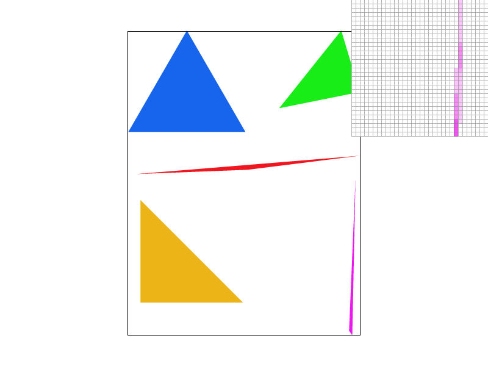
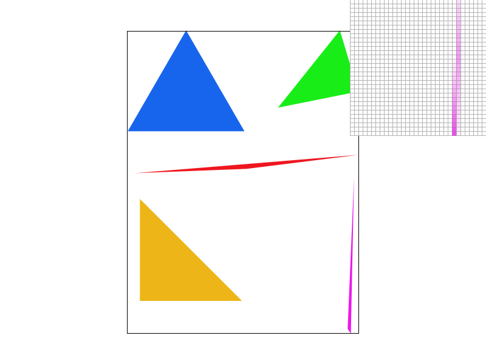
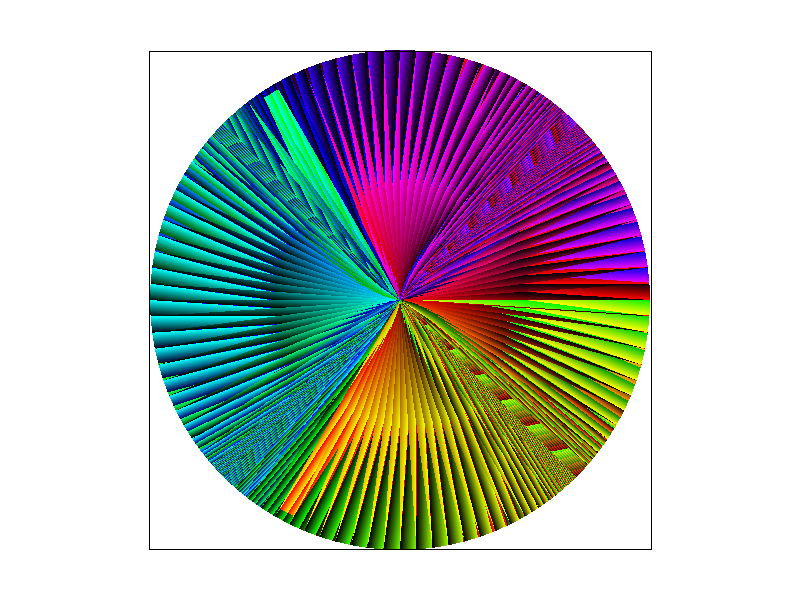
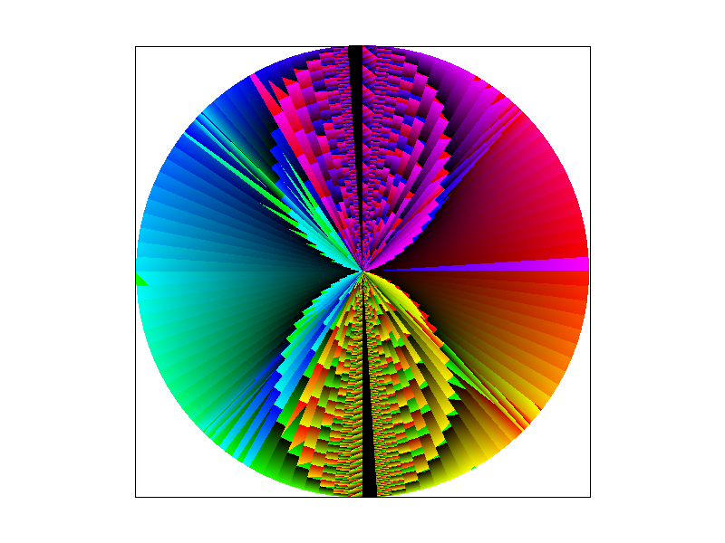
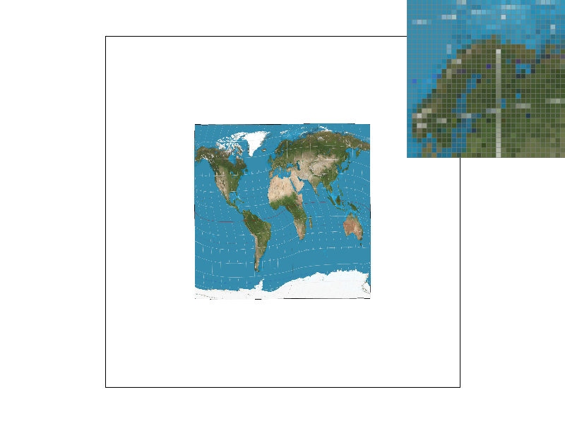
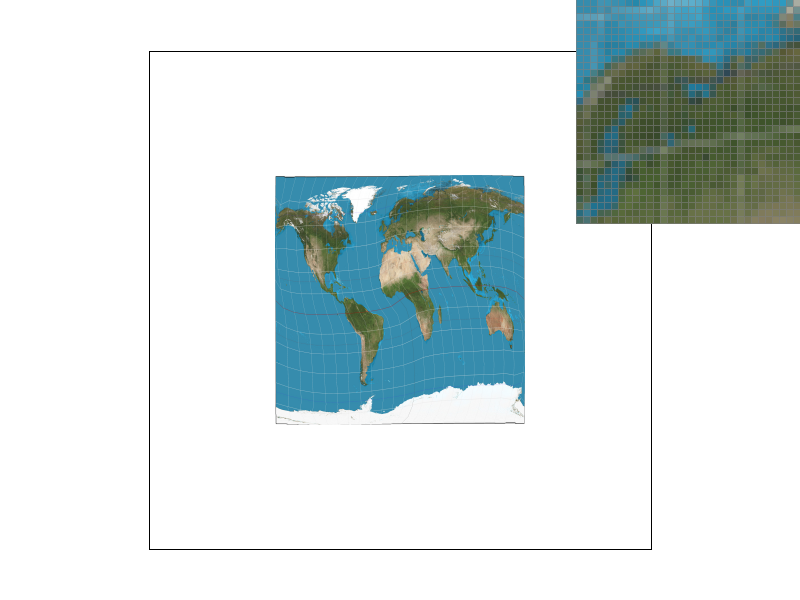
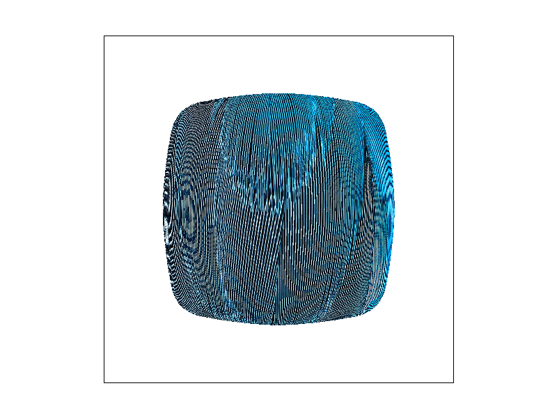
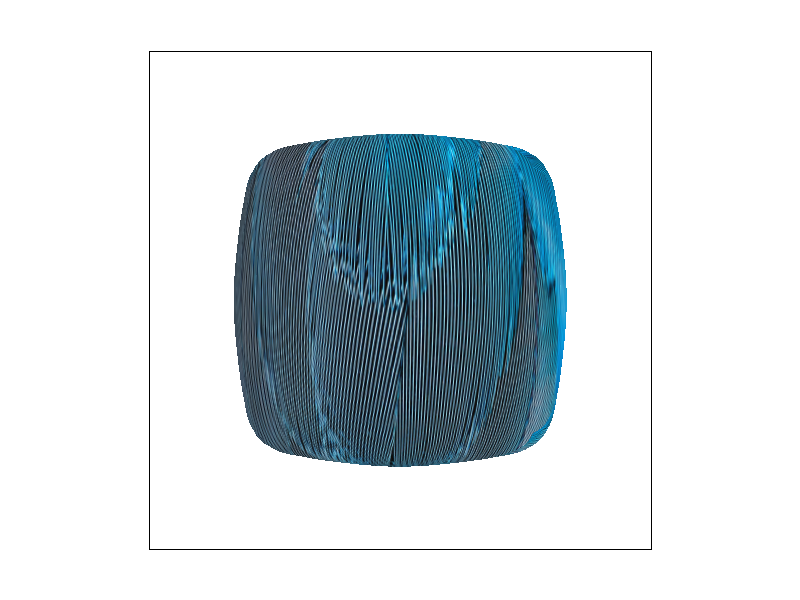

CS184/284A Spring 2025 Homework 1 Write-Up
Name: Ruben Gonzalez
Link to webpage: Webpage
Link to GitHub repository: Github Repo
Overview
This homework entailed implementing a simple triangle rasterizer capable of antialiasing. I progressed from drawing basic triangles to adding supersampling, barycentric interpolation, transformations, and finally texture mapping with mipmaps and linear interpolation. I really enjoyed the freedom of the process—I felt like a real programmer with little to no “hand holding.” Although I technically learned the pipeline in lecture, this assignment made me feel that I truly understand each step at its fundamental level.Task 1: Drawing Single-Color Triangles
To rasterize triangles, I began by first writing the point-in-triangle test. I stored the value of the test in three variables. Then, using an if statement, I checked the values to see where the point was. If it was on or in the triangle, I filled the pixel. To fill in the whole triangle, I wrote a double for loop that went from [0, maxY] and [0, maxX]. To not have to check every pixel on the screen, I had a boolean that when the for loop landed in the triangle, was true. Once the for loop left the triangle, it was set to false and the inside loop was broken to go onto the next y level. This early-exit method can only reduce the number of tests; in the absolute worst case it would do the same number of checks as the “check all samples in the box” algorithm, so its complexity is no worse.Task 2: Antialiasing by Supersampling
I implemented Supersampling by first taking the sample buffer and making (width * sampling rate x height * sampling rate). Then during triangle rasterization, During triangle rasterization, each pixel is divided into a grid of sample_rate * sample rate sub-pixels. With this, I could then draw into the sample buffer by testing the center of the sub-pixels.Once every sub-pixel is shaded, the challenge is to collapse the sample buffer back to the original framebuffer. My initial approach was to count how many sub-pixels “hit” the triangle and divide by the total number of sub-pixels to get a coverage ratio—but this left me unsure how to translate that into RGB color values. I revised my method to compute the average of the red, green, and blue channels across all sub-pixels in each pixel’s block. Concretely, for each pixel at (x, y), I sum the R, G, and B components of its sample_rate² sub-pixels and then divide each sum by sample_rate². Those averaged channels become the final color written into rgb_framebuffer_target.
I encountered a very big wall though when I began trying to resolve the sample buffer into the frame buffer. After all the pixels were shaded, I initailally tried to count how many sub-pixels were "hit" in the triangle and divide by the total number of sub-pixels to get a coverage ratio-but I was left stuck at how to use the ratio with RBG color values. I eventually revised my method to compute the average of the RBG channels across all sub-pixels in each pixel's block. Essentially, for each pixel at (x, y), I sum the R, G, and B components of its sample_rate^2 sub-pixels and then divide each sum by the sample_rate^2. These averaged values became what I passed in as the final color in the rgb_framebuffer_target.
Supersampling is useful because when we convert the high-detail continuous scene to a discrete screen of pixels, it's very common to get jaggies and disconnected pixels that are part of the same shape. Supersampling allows us to to sample these otherwise skipped points without having to increase the resolution.
Looking at the example below, we can see that the corner gradually got more and more connected until it looks good enough. This is because the triangle got so fine/thin in that corner that it slipped through the pixels. With the supersampling though, we were able to capture that otherwise lost sampling. I would argue even at 4x sampling, the overall image looks good. You only begin to see those issues when you zoom in.
|
|

|

|
Task 3: Transforms
This one was pretty straight forward, I just implemented the matrices as they are defined. Below, I tried to make the robot look like it's doing the wave.Task 4: Barycentric coordinates
Berycentric coordinates provide a way to interpolate values inside a trianglge by taking the weight of each vertex. The distance from the vertex determines how much influence that vertex has on the interpolated value. (whatever value we may be trying to interpolate).In the example above, you see that each vertex corresponds to a color (red, green, and blue) and the distance to that vertex determines how much of that color is at the point we are looking at. Although this example skips over the actual computation (weights are actually dependent on the areas of sub-triangles) it offers a simple model for understanding interpolation.

|  |  |
Task 5: "Pixel sampling" for texture mapping
Texture mapping applies an image(texture) to a triangle by converting screen-space coordinates into texture (UV) coordinates. I did this by first computing the berycentric weights and applying them to the UV coordinates. After scaling them, I can pass them into either the nearest sampling method or the bilinear sampling method. For nearest sampling, we just take the UV coordinates and normalize them for the screen by multipling them by the width and height respectively. With these values, we can just round them to get the texel color. For bilinear sampling we normalize/round them, but then fetch the four closest texels around that point and preform two linear interpolations to blend the colors.|
|

|

|

|
Nearest pixel works well to just get the general texture on the screen while the bilinear filtering will go the extra step and smooth it out for you. The biggest difference comes when theres lots of contrast in the picture (like the white line being right in the middle of the green land).
Task 6: "Level Sampling" with mipmaps for texture mapping
Mipmap (level) sampling is a technique that reduces aliasing and improves overall image quality by chooseing an appropriately filter version of a texture based on its screen-space footprint (area). A mipmap stores the texture plus progressively smaller, prefiltered copies. The idea is that when triangles have a small footprint, you would want a smaller resolution texture because at that scale, loading something high res would give you aliasing. I implemented it by calculating the derivative to find the level. With this value, you can pass it as it is (corresponding to Nearest D) or lerp the sample at this point and at the next point to get a blend of the two (corresponding to Linear interpolation).|

|

|
|
|
|
As you can see, the various combinations produce similar images but with vastly different render times. Without any antialiasing, rendering is fastest but yields extreme moiré patterns. Using trilinear sampling reduces these to minor artifacts, though it's about ten times slower than no antialiasing. Next, I tried nearest-level sampling with 4x supersampling and bilinear texture filtering. Although this is 2 times slower than trilinear alone, it offers the best balance of quality and speed. 9x supersampling achieves the same visual result but takes over twenty times longer.